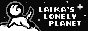
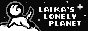

Neocities/Nekoweb Sites
A collection of links for sites that are hosted on Neocities or Nekoweb. Maybe some other sites if I think they fit here.
Down Under
Neocities sites made by fellow Australians!


Interesting Neo/Neko Sites
These are some cool sites that informational/educational

buttonless:
In Women's Hands: Transmitting the Literature of Heian Japan - about women writers and readers in Japanese artNeo/Neko Sites
Some cool neocities sites you should visit.
 
